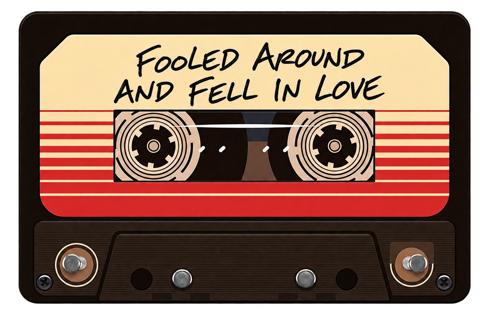

Uma galáxia de
memórias
Em meio a bilhões de estrelas, algumas pessoas se tornam o nosso universo inteiro. Esta é uma história contada com muisca e fotografias, entre encontros, aventuras e momentos que merecem durar para sempre.
Com carinho, de uma galáxia para outra.